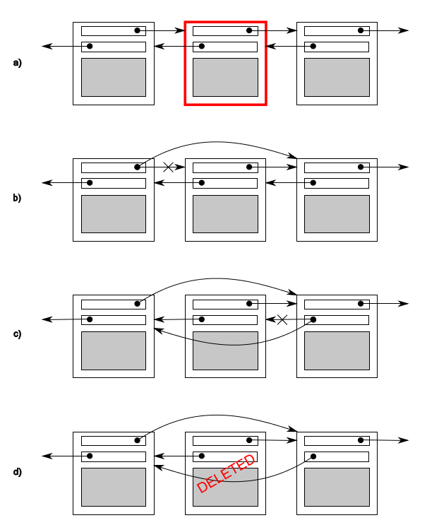

3.1 共享数据的问题
涉及到共享数据时，问题就是因为共享数据的修改所导致。如果共享数据只读，那么不会影响到数据，更不会对数据进行修改，所有线程都会获得同样的数据。但当一个或多个线程要修改共享数据时，就会产生很多麻烦。这种情况下，需要小心谨慎，才能确保所有线程都正常工作。
不变量(invariants)的概念对开发者们编写的程序会有一定的帮助——对于特殊结构体的描述，比如：“变量包含列表中的项数”。更新通常会破坏不变量，特别是复杂的数据结构。
双链表中每个节点都有一个指针指向列表中下一个节点，还有一个指针指向前一个节点。其中不变量就是节点A中指向“下一个”节点B的指针，还有前向指针。为了从列表中删除一个节点，其两边节点的指针都需要更新。当其中一边更新完成时，就破坏了不变量，直到另一边也完成更新。在两边都完成更新后，不变量就稳定了。
从一个列表中删除一个节点的步骤如下(如图3.1)
a. 找到要删除的节点N
b. 更新前一个节点指向N的指针，让这个指针指向N的下一个节点
c. 更新后一个节点指向N的指针，让这个指正指向N的前一个节点
d. 删除节点N

图3.1 从一个双链表中删除一个节点
图中b和c在相同方向上的指向和原来已经不一致了，这就破坏了不变量。
线程间的问题在于修改共享数据，会使不变量遭到破坏。删除过程中不确定是否有其他线程能够进行访问，可能就有线程访问到刚刚删除一边的节点。这样破坏了不变量，线程就读取到要删除节点的数据(因为一边的连接被修改，如图3.1(b))。破坏不变量的后果是不确定的，当其他线程按从左到右的顺序访问列表时，将跳过被删除的节点。如有第二个线程尝试删除图中右边的节点，可能会让数据结构产生永久性的损坏，并使程序崩溃。这就是并行中常见错误：条件竞争(race condition)。
3.1.1 条件竞争
假如你去一家大电影院买电影票，有很多收银台，很多人可以同时买票。当另一个收银台也在卖你想看电影的电影票时，你的座位选择范围取决于在之前已预定的座位。当只有少量的座位剩下，就可能是一场抢票比赛，看谁能抢到最后一张票。这就是一个条件竞争的例子：你的座位(或者电影票)都取决于购买的顺序。
并发中的竞争条件，取决于一个以上线程的执行顺序，每个线程都抢着完成自己的任务。大多数情况下，即使改变执行顺序，也是良性竞争，结果是可以接受的。例如，两个线程同时向一个处理队列中添加任务，因为不变量保持不变，所以谁先谁后都不会有什么影响。
当不变量遭到破坏时，才会产生条件竞争，比如：双向链表的例子。并发中对数据的条件竞争通常表示为恶性竞争(我们对不产生问题的良性条件竞争不感兴趣)。C++标准中也定义了数据竞争这个术语，一种特殊的条件竞争：并发的去修改一个独立对象(参见5.1.2节)，数据竞争是未定义行为的起因。
恶性条件竞争通常发生于对多个数据块的修改，例如：对两个连接指针的修改(如图3.1)。操作要访问两个独立的数据块，独立的指令会对数据块将进行修改，并且其中一个线程可能正在进行修改，另一个线程就对数据块进行了访问。因为出现的概率低，很难查找，也很难复现。如CPU指令连续修改完成后，即使数据结构可以让其他并发线程访问，问题再次复现的几率也相当低。当系统负载增加时，随着执行数量的增加，执行序列问题复现的概率也在增加，这样的问题可能会出现在负载比较大的情况下。条件竞争通常是时间敏感的，所以程序以调试模式运行时，错误常会完全消失，因为调试模式会影响程序的执行时间(即使影响不多)。
当你以写多线程程序为生，条件竞争就会成为你的梦魇。编写软件时，我们会使用大量复杂的操作，来避免恶性条件竞争。
3.1.2 避免恶性条件竞争
这里提供一些方法来解决恶性条件竞争，最简单的办法就是对数据结构采用某种保护机制，确保只有修改线程才能看到不变量的中间状态。从其他访问线程的角度来看，修改不是已经完成了，就是还没开始。C++标准库提供很多类似的机制，下面会逐一介绍。
另一个选择是对数据结构和不变量进行修改，修改完的结构必须能完成一系列不可分割的变化，也就保证了每个不变量的状态，这就是所谓的无锁编程。不过，这种方式很难得到正确的结果。到这个级别，无论是内存模型上的细微差异，还是线程访问数据的能力，都会让工作量变的很大。
另一种处理条件竞争的方式，是使用事务的方式去处理数据结构的更新(这里的"处理"就如同对数据库进行更新一样)。所需的一些数据和读取都存储在事务日志中，然后将之前的操作进行合并，再进行提交。当数据结构被另一个线程修改后，或处理已经重启的情况下，提交就会无法进行，这称作为“软件事务内存”(software transactional memory (STM))，这是一个很热门的理论研究领域。这个概念将不会在本书中再进行介绍，因为在C++中没有对STM进行直接支持(尽管C++有事务性内存扩展的技术规范[1])。
保护共享数据结构的最基本的方式，使用C++标准库提供的互斥量。
[1] SO/IEC TS 19841:2015—Technical Specification for C++ Extensions for Transactional Memory http://www.iso.org/iso/home/store/catalogue_tc/catalogue_detail.htm?csnumber=66343 .